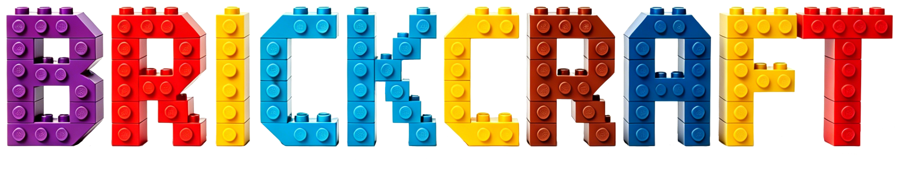
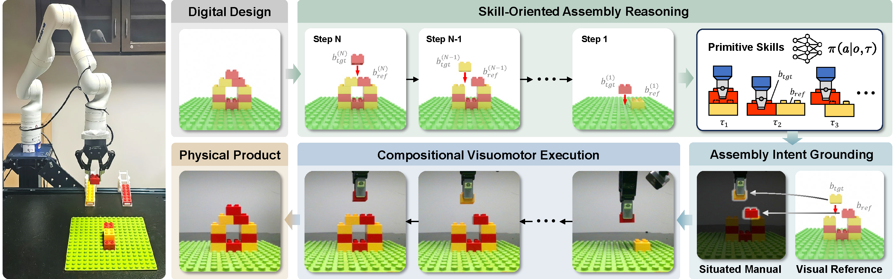
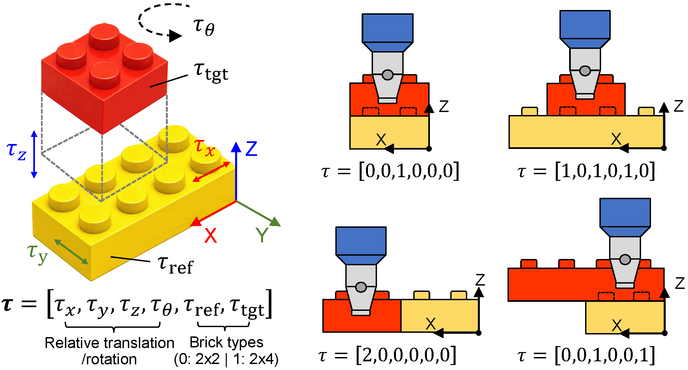
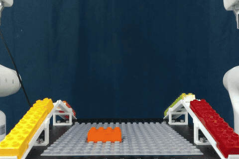

\(\tau = [0,0,1,0,0,0]\)
Seen
Unseen

Autonomous robotic assembly of interlocking bricks demands seamless integration of long-horizon task reasoning, spatial grounding, and fine-grained manipulation. This paper presents BrickCraft, a compositional framework designed for long-horizon and generalizable interlocking brick assembly. BrickCraft models the assembly process using a relative formulation, where each step is anchored to a reference brick within the partial structure, thereby decomposing complex tasks into a finite set of reusable primitive skills. BrickCraft bridges the gap between high-level assembly plans and physical execution through situated manuals, which provide explicit spatial guidance for learned visuomotor skills by projecting the assembly intent onto real-time robot observations. Finally, BrickCraft employs a modular execution pipeline that chains these spatially grounded skills to accomplish long-horizon assembly tasks. Extensive experimental validations demonstrate that BrickCraft acquires proficient assembly skills from a limited set of demonstrations and effectively composes them for diverse long-horizon assembly tasks.

BrickCraft transforms a digital design into a physical product through three phases: (i) Skill-Oriented Assembly Reasoning decomposes the long-horizon task into steps anchored to reference bricks and maps them to reusable primitive skills; (ii) Assembly Intent Grounding generates situated manuals to provide spatial guidance; and (iii) Compositional Visuomotor Execution chains visuomotor skills to complete the assembly.
LEGO bricks offer endless possibilities for creative assembly. We adopt a relative task representation: each assembly step installs a target brick relative to a reference brick, allowing us to abstract open-ended assembly tasks into a finite set of reusable assembly primitives.
Each primitive is represented by a 6D integer vector
which encodes the relative position and orientation of the target brick with respect to the reference brick, together with the types of the two bricks.

Given a target structure \(\mathcal{B}\) and a predefined set of task encodings \(\mathcal{T}\), BrickCraft searches for a feasible assembly plan \(\mathcal{P}\) through an assembly-by-disassembly strategy. It first searches for a feasible disassembly sequence and then reverses it to obtain \(\mathcal{P}\), while enforcing physical constraints on connectivity, observability, operability, and structural stability.
To bridge symbolic assembly plans with real-world execution, we render visual references in simulation and align them with real-world observations to extract task-relevant entity masks. These masks are tracked using SAM 2 and overlaid onto real-time observations to create a situated manual that provides explicit spatial guidance for assembly. We formulate the visuomotor assembly skill as a diffusion policy, which takes the situated manual as visual input and is conditioned on the task encoding \(\boldsymbol{\tau}\) to generate diverse assembly behaviors.

Evaluated on 8 seen and 8 unseen structures across three primitive assembly skills, BrickCraft achieves an overall success rate of 86.25% across 240 trials. Compared with two goal-image-conditioned baselines, GI-DP and GI-π0.5, BrickCraft consistently outperforms both while demonstrating generalization to unseen structures.
By chaining spatially grounded skills into a composable execution pipeline, BrickCraft achieves fully autonomous, long-horizon assembly across various brick designs.
BrickCraft does not require precise workspace calibration. With situated manual guidance and learned closed-loop visuomotor skills, the system adapts to spatial perturbations such as shifting the assembled structure, moving the baseplate, and changing the camera viewpoint. It can also identify the current assembly state and resume assembly from the appropriate step when previously assembled bricks are removed.

ArXiv, 2026

ArXiv, 2026


RSS, 2025

ICCV, 2025

IEEE RA-L, 2025


International Symposium on Flexible Automation (ISFA), 2024
@misc{yu2026brickcraft,
title={BrickCraft: Visuomotor Skill Composition with Situated Manual Guidance for Long-Horizon Interlocking Brick Assembly},
author={Jichuan Yu and Bowei Li and Zhenran Tang and Guanxing Lu and Chuxiong Hu and Ruixuan Liu and Changliu Liu},
year={2026},
eprint={2605.07605},
archivePrefix={arXiv},
primaryClass={cs.RO},
url={https://arxiv.org/abs/2605.07605},
}